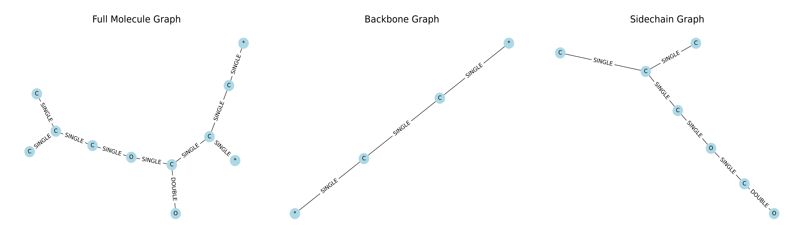

Polymer Graphs
The Polymer class in PolyMetriX is designed to distinguish between the backbone and side chains of a polymer. It identifies which atoms in a polymer belong to the backbone and which belong to the side chains.
This is achieved by converting the PSMILES representation into a graph-based representation using the NetworkX library. By utilizing graph theory concepts such as shortest path, cycles, connected components, and the degree of nodes, the Polymer class classifies the backbone and side chain atoms within a polymer.
Graph Theory Concepts¶
- Nodes and Edges: In the context of a polymer, nodes represent atoms and edges represent bonds between atoms.
- Shortest Path: The shortest path between two nodes is the smallest number of edges that must be traversed to reach one node from the other.
- Cycles: A cycle is a path that starts and ends at the same node, forming a closed loop.
- Connected Components: A connected component is a subgraph in which every node is reachable from every other node.
- Degree of a Node: The degree of a node is the number of edges incident to that node.
Distinguishing Backbone and Side Chains¶
The process of classifying nodes into backbone and side chain components is handled by the classify_backbone_and_sidechains helper function in the Polymer class. This function uses the following steps to identify the backbone and side chain atoms:
-
Graph Construction: The
PSMILESrepresentation of the polymer is converted into a graph using theNetworkXlibrary. -
Shortest Paths Between Connection Points: The algorithm identifies all shortest paths between pairs of asterisk (*) nodes. These paths often correspond to the main chain or repeating units of the polymer, forming the initial backbone.
-
Cycles Detection: Cycles (closed loops) in the graph that include nodes from these shortest paths are identified. In polymers, cycles can represent cyclic structures (e.g.,(aromatic) rings) within the backbone. Nodes in these cycles are added to the backbone.
-
Degree-1 Nodes: Nodes with a degree of 1 (connected to only one other node) that are attached to the backbone are also included in the backbone. These are typically terminal groups.
-
Connected Components: The remaining nodes in the graph that are not part of the backbone are considered side chain atoms. These atoms are connected to the backbone but are not part of the main chain.
By following these steps, the Polymer class can accurately distinguish between the backbone and side chain atoms of a polymer.
Step-by-Step Example¶
Let’s walk through an example using a simple polymer, Poly(isobutyl acrylate) represented by the following PSMILES notation:
Step 1: Initialize the Polymer
from polymetrix.featurizers.polymer import Polymer
psmiles = Polymer("[*]CC(C(OCC(C)C)=O)[*]")
polymer = Polymer.from_psmiles(psmiles)
RDKit molecule and converted to a NetworkX graph (_mol_to_nx).
Step 2: Identify Connection Points
Output: The * atoms (nodes 0 and 10) are identified as connection points.Step 3: Find Shortest Paths
The find_shortest_paths_between_stars function computes the shortest path between nodes 0 and 10.
from polymetrix.featurizers.polymer import find_shortest_paths_between_stars
paths = find_shortest_paths_between_stars(polymer.graph)
print("Shortest Paths:", paths)
find_cycles_including_paths function identifies cycles that include the shortest paths found in the previous step.
from polymetrix.featurizers.polymer import find_cycles_including_paths
cycles = find_cycles_including_paths(polymer.graph, paths)
print("Cycles:", cycles)
Step 5: Classify Backbone and Sidechains
The classify_backbone_and_sidechains function combines the paths and adds degree-1 nodes
from polymetrix.featurizers.polymer import classify_backbone_and_sidechains
backbone, sidechains = classify_backbone_and_sidechains(polymer.graph, paths)
print("Backbone Nodes:", backbone)
print("Sidechain Nodes:", sidechains)
The below figure illustrates the classification of backbone and side chain atoms in the polymer graph: 